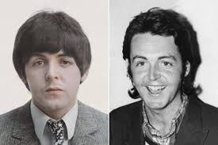

ATTENTION!
PAUL MCCARTNEY IS DEAD! HE DIED AND WAS REPLACED IN 1966!!

PAUL AND HIS REPLACER!
In 1966 Paul died in a car crash and was replaced by a look alike named Billy Shears by MI5!
Paul is the only one on the back of sgt.peppers that isnt facing the camera
They hide it in noise and color and call it art, but its all screaming if you listen. Sgt. Pepper wasnt a reinvention, it was a funeral dressed up like a parade. New uniforms, new faces, a new name slipped in like a joke, Billy Shears, and everyone laughs instead of asking why a Beatle suddenly needs an alias. That record isnt playful, its controlled. Tight. Careful. Like people afraid of saying the wrong thing. and then it gets uglier. I Am the Walrus isnt nonsense, its mockery. A voice saying "youre confused on purpose." Revolution 9 isnt music, its evidence shredded and looped until your brain gives up. Number nine over and over, like theyre daring you to connect anything. They want it to feel crazy so youll stop digging. Thats the trick. Because the moment you stop treating it like a joke, the whole thing collapses. They didnt replace a man and move on theyve been defending the lie ever since, louder and louder, because silence would give it away.